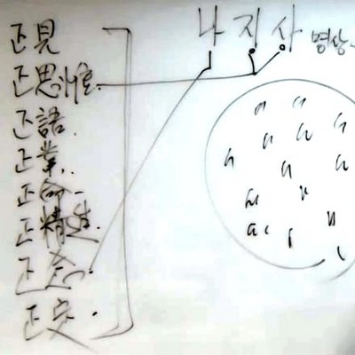
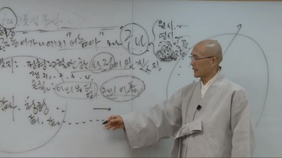

同事攝아카데미
一般課程
第12 講 나지사 暝想
안녕들 하십니까.
이 순간, 어떠세요? 프로그램이 한 時間짜리가 됐든, 일주일짜리가 됐든 내 프로그램의 이름을 ‘이 순간, 어떠세요’라고 하겠다고 마음먹은 일이 있습니다. 자, 어떠세요. 이 순간 어떠세요에 對한 答 하나로 나지사 暝想을 主題로 말씀 올리겠습니다. 나지사 暝想. 구나겠지감사 暝想입니다.
자, 여러分들은 나지사 暝想을 수없이 하셨겠는데 어때요? 나지사 暝想하면 어떻습니까? 어떤 마음이 들어요? 일단 좋지요. 나지사 暝想은 그 목적이 무엇인가 하면 우리들 속에 탐.진.치 念体가 있는데, 진심이라는 분노 念体를 정화하는 것입니다. 나지사 暝想은 분노 念体를 정화하는 도구입니다. 분노 念体를 제거할 필요가 있을까요? 내 마음은 허공처럼 텅 비어야 되는데 분노라고 하는 먹구름이 내 의식 空間 어디에 막 흐르고 있다고 하면 좋은 일이 아니잖아요. 그러니까 분노 念体를 제거해야지요.
여러분들 마음속에 世上 무엇인가에 대해서 미움을 가지고 있다면 그것은 유쾌한 일이 아니지요. 그러니까 그 미움을 정화해야 합니다. 어디, 그거 떠올리기만 하면 나는 불쾌해 하는 것들이 여러分들 속에 좀 있습니까. 只今쯤은 이제 없어져 버렸습니까. 어디 그거 체크 한번 하고 들어갑시다. 자, 나는 무엇인가 그것을 떠올리면 불쾌했는데 只今 보니까 그것이 없네요. 아무리 찾아봐도 只今은 모르겠습니다. 없습니다, 하는 분, 손 한번 들어보세요. 한 분, 두 분, 세 분, 네 분. 나는 그것을 떠올리면 유쾌하지 않은 것을 열 개 이상은 되겠네요, 하시는 분, 손 한번 들어봅시다. 열 개 이상입니다. 음, 두 사람이나 손을 들었네요. 그렇구나. 그럼, 나는 열 개 이하로 있는 것 같습니다, 하시는 분, 손 한번 들어보십시오. 그러면 열 개 이하든 이상이든 여러分들 속에 미움의 念体, 분노의 念体, 불유쾌의 念体. 이것이 있다는 것은 바람직하지는 않지요. 정화를 해야 되겠지요. 그렇다면 정화는 무엇으로 하나요? 빗자루로 쓸어버리고 걸레로 닦아 버리고 이래야 될 것 아닙니까? 쓸고, 닦고 하는 도구가 있어야 될 텐데 그 도구가 구나겠지감사 라는 暝想법이라는 말입니다.
자, 八正道를 한번 整理해 봅시다. 8정도 次元에서 구나겠지감사는 어떤 것인가. 正見, 正思惟, 正語, 正業, 正命, 正精進, 正念, 正定, 이것이 8정도입니다. 釋迦牟尼께서 大覺을 성취하셔서 緣起의 理致를 보시고 解脫을 하셨습니다. 緣起 의 理致를 보시고 解脫을 하시고 이 世上 사람들에게 어떻게 가르칠까 하고 가르침 體系를 整理를 했는데 그것이 四聖諦, 十二緣起, 八正道입니다. 4성제 十二緣起는 사상이라고 하면 8정도는 실천법입니다. 八正道는 바른 견해, 바른 思惟 , 바른 말, 바른 行動, 바른 생계수단, 바른 정진, 바른 집중, 마음을 가라앉힘, 이런 식입니다. 나지사의 ‘나’는 正念에 들어가고 ‘지’와 ‘사’는 正思惟에 들어가게 됩니다. 8정도의 正思惟와 正念을 끌어가지고 暝想법으로 옮겨놓은 것이 구나겠지감사 暝想입니다. 그리고 -구나는 正見과 이을 수도 있으나, 여기서는 일단 正念 으로 보면 됩니다.

그러면 여러分들이 무엇인가를 미워한다, 무엇인가로 유쾌하지 않게 생각한다고 하면 그렇게 된 상황이 있을 거예요. 그 놈이, 길동이가 나에게 이놈아! 해서 내가 화가 났다. 뭐, 이런 식입니다. 어머니에게 용돈을 달라고 하니까 주지 않아서 속이 상했다. 이처럼 화가 나는 데에는 恒常 조건이 있습니다. 그것도 緣起입니다. 여러分들이 무엇인가 속에서 미움이 일어났다, 고통이 일어났다 하면 전부 緣起예요. 스스로 고통만 달랑, 미움만 달랑 있는 것이 아니라 어떤 인연이 있어서 이런 것이 결과물로 꼭 오게 됩니다.
우리들 의식 空間에는 알게 모르게 世上에 대해서 적응되지 못하는 마음이 수없이 있게 됩니다. 世上에 대해서 적응되지 못하고 통과되지 못한 마음을 분노라고 합니다. 그래서 여러分들이 열 개다 몇 개다 그랬지만은 잘 보십시오. 제법 아주 많이 있을 것입니다. 그러면 이러한 것들이 앞으로도 생길 수 있고, 현재도 있다 그 말입니다. 또 과거에 있었는데 只今은 사라져서 없다, 이럴 수도 있습니다. 그런데 과거에 있었는데 只今은 사라져버렸다 하는 것은 희뿌옇게 있을 수도 있어요. 이것을 없어졌다고 생각하면 맞지 않은 말입니다. 여러 分들이 없어졌다고 하려면 記憶에서 아예 사라져버려야 됩니다. 그런데 記憶에서 사라졌다고 하더라도 그 잔영은 있을 수가 있어요. 그러니까 여러 分들 속에 있는 분노 念体들이 100% 깨끗하게 없어져버렸다고 장담하기로는 좀 일러요. 여러 分들은 겸허한 자세를 가질 필요가 있습니다. 記憶 안 나는 분노 念体가 우울증으로 나타나게도 됩니다. 世上 에 대해서 적응이 안 되는 마음이 있어. 그런데 무엇 때문에 적응이 되지 않는지 몰라. 記憶에는 없어. 그런데 내 속은 무엇인가 쾌청하지가 않습니다. 그 쾌청하지 않은 심리 狀態를 뭐라고 그래요? 그것을 우울증이라고 합니다. 그러고 우울증程度 가 어느 선을 넘어서게 되면 이제 精神과 의사한테 가서 치료를 받아야 할程度가 되고 치료 받을程度가 아닐程度라면 조금 건강한 우울증입니다. 자, 이러한 것들은 청소를 해야 되겠다는 것입니다.
우리의 의식 空間에 있는 부정的인 念体들을 이렇게, 이렇게, 이렇게 지웁니다. 여러分들 기분 어때요? 뭔가 시원해지지요? 칠판에다가 뭔가 써놓고 좀 지운다고 시원해져요? 여러 分들 마음이 참 사삭스럽네요. 하하하. 이렇게, 이렇게 모두 지웁시다. 이렇게 깨끗해진 이 마음을 自性이라고 합니다. 스스로 본래 마음. 이 自性으로 돌아가려고 하면 무엇인가 붙어 있는 이것들을 일단 정화작업을 해야 됩니다.
자, 그러면 實踐으로 들어가 봅시다.
길동이가 나에게 이놈아! 해서 화가 났다.
이 형식이 나지사 暝想의 기초입니다. 이것을 상황이라고 그래요. 그러면 여러分들 속에는 길동이가 이놈아! 해서 화가 났다고 하면 여러分들의 의식 空間에는 뭐가 있겠어요? 화. 이것이 여기에 이렇게 있다 그거예요. 그래서 이것을 정화하자 그겁니다. 그러면 정화하는 방법은 무엇이냐. 길동이가 나에게 이놈아! 해서 화가 났다고 하는 이 상황에서 여러分 들이 暝想하는 방법은,
길동이가 나에게 이놈아 하는 구나,
하고 그대로 바라보는 거예요. 그대로 바라보는 것을 正念이라고 합니다. 그대로 바라보는 것. 그런데 길동이가 나에게 이놈아! 한 것을 그대로 바라보게 되면 화가 나겠습니까? 화나지 않습니다. 감정은 길동이가 나에게 이놈아! 할 때 그것을 주관的으로 윤색시키면서 일어나게 됩니다. 그러니까 염색을 하고 그것을 주관 的으로 거르는 그런 짓거리를 하지 말고 그대로 그냥 바라보는 것입니다. 그래서 무엇인가 사건을, 상황을 그대로 바라다보는 연습을 한 번 해 보고, 두 번 해 보고, 세 번 해 봅니다. 그렇게 연습을 하고 있다가 보면 점점 그 연습이 적응됩니다. 그래서 점점 그대로 그냥 바라보게 됩니다. 물론 만만한 일은 아닙니다. 왜? 사람은 애기 때부터 只今까지 자극이 하나 확 들어오게 되면 주관 的으로 필터링을 하는 것, 너무너무 주관 的으로 필터링을 하는 것에 익어져 있습니다. 이 필터를 통과하면서 화가 나버리는 겁니다. 그런데 이 필터링을 하지 않는 것이 -구나입니다. 필터링하지 말고 그냥 보십시오. 재미있어요. 그냥 보면.
그런데 이미 화가 나버렸습니다. 그러면 어떻게 하면 좋겠어요? 할 수만 있으면, 연습이 잘 되어 있다고 하면 화가 나기 이전에 길동이가 나한테 이놈아 하네로 끝나버릴 수가 있겠지요. 그런데 이미 화가 나버렸어. 화가 났어. 어떻게 해야 되지요? 뒷북이라도 쳐야 됩니다. 뒷북이라도. 화가 이미 나버렸으면 좀 늦은 감은 있지만 늦었다고 생각이 될 때가 아주 빠른 때여요. 그때 연습을 해요. 화가 나버렸어. 그럼 이 상황을 놓고 이렇게 연습을 하세요.
길동이가 나에게 이놈아 하는 구나.
자, ‘길동이가 나에게 이놈아 해서’까지가 촛대고 ‘화가 났다’까지는 불꽃인데 이 불꽃 부위 를 없애버리고 버리고 촛대에다 구나를 붙이는 겁니다.
길동이가 나에게 이놈아 하는 구나.
이것이 -구나 暝想입니다. -구나 暝想을 할 때 몇 가지 留念 점들을 옵션으로 쓰면 좋아요. 멀리 떼어 놓고 바라보기입니다. 遠視입니다. 遠視故空법을 쓰세요. 멀리 바라보면서 -구나 하면 더 낫습니다. 그 다음 永時故空법입니다. 긴 時間간격을 두어라 하는 것입니다. 어저께 길동이가 나한테 이놈아 했다고 하면 내 속에서 심각성이 좀 있게 됩니다. 그런데 10년 전에 길동이가 나한테 이놈아 했다고 하면 심각도가 떨어져요. 그러니까 어저께나 그저께나 그그저께나 과거인 것은 비슷하지 않아요? 그러니까 훨씬 더 과거, 대과거로 해버려라, 좀 먼 과거로 해버려라 하는 것입니다. 그 다음에 億分一空법을 써요. 길동이가 나에게 이놈아 한 사건은 내 人生전체 경험 중에 몇 %나 되겠어요? 억분의 1도 안 됩니다. 내 人生반경 전체에 비하면 길동이가 나한테 이놈아 한 것은 아무것도 아닙니다. 그러니까 길동이가 나에게 이놈아 한 것에 목을 매지 말라는 것입니다. 길동이가 나에게 이놈아 한 것은 내 人生전체 영역 중에서 점 하나도 안 돼. 그러니까 여기다가 목을 매면 억울하지요. 반程度나 된다고 하면 조금 問題 삼을런지 몰라도 점도 안 되는 것이니 億分一空이다, 억분의 일도 안 되지 않아 하면서 쓱~ 웃어버리라고요. 또 “으흠~” 하는 법도 나왔지요. 앞으로 여러 分들이 -구나 할 자리에 “으흠~” 하세요.
으흠~, 길동이가 나에게 이놈아 하는 구나. 으흠~
이렇게 으흠을 붙여서 해도 좋을 거예요. 그 다음에 念体故空법입니다. 念体故空법을 써 보십시오. 길동이가 나에게 이놈아 한 것은 只今 하고 있어요 아니면 과거에 했어요? 과거에 했지요? 그러면 只今 길동이가 나에게 이놈아 했어 라고 하는 것은 길동이가 只今 나한테 이놈아 하고 있는 거예요? 아니면 내가 그렇게 생각하고 있는 거예요? 只今 내가 그렇게 생각하고 있는 것입니다. 이미 길동이는 없어요. 그런데 내가 只今 현재 나의 念体를 창출하고 있는 것입니다. 그러니까 과거 것을 현재로 끌고 와서 징징대는 것은 너무도 어리석은 짓입니다. 어떻게 보나 어리석은 겁니다. 그래서 遠視故空 , 永時故空, 億分一空, 念体故空과 같은 옵션을 살짝살짝 붙여가면서 구나를 해보면 재미가 쏠쏠하니 좋다는 말입니다. -구나 그것은 단지 바라보기만 하라는 正念工夫법입니다.
실제로 무엇인가 자극물이 딱 왔을 때 그냥 보는 것이 낫겠어요? 아니면 내가 색칠해서 보는 것이 낫겠어요? 그냥 보는 것이 단연 옳지요. 저 사람이 빨간 색을 입고 왔어요. 그런데 내가 주관 的으로 푸른 안경을 쓰고 저 새끼 푸른 색의 옷을 입고 왔네, 이런다고 하면 맞아요? 안 맞아요? 안 맞지요. 그런데 자기가 그림을 그려놓고 내 그림이 바로 그것인 것처럼 공격을 해대는 것은 걸려드는 것입니다. 그러니까 따지고 들어가면 들어갈수록 걸려 있다는 것은 참으로 억울한 일입니다.
길동이가 이놈아 해서 화가 났다가 상황입니다. 상황은 길동이가 이래서 화가 났다 까지가 상황입니다. 여러分들이 暝想을 할 때에는 먼저 상황을 설정을 해야 됩니다. 상황 설정을 해 놓고,

1. - 구나 합니다. 길동이가 나에게 이놈아 하는 구나.
2. 그 다음 -겠지 하십시오. -겠지는 어디에 들어간다고 그랬어요? -겠지는 思惟라고 했습니다. -겠지에 딱 들어갔다 하면 여러分 들이 1번으로 留念해야 할 것이 定型입니다. 定型 이 무엇이지요? ‘그럴만한 사정이 있겠지’ 하고 理解하라 그 말입니다. 理解하는 것이 正思惟입니다. 생각하는 겁니다. 그럴만한 사정이 있겠지 라고 기본 的으로 생각을 해 버려요. 그러면 사정이 무엇인지는 몰라도 사정이 있을 것임에는 틀림없지 않습니까. 그러니까 그럴만한 사정이 있겠지. 딱 이렇게 함과 同時 에 내 속에서는 벌써 개운해지는 것입니다. 그럴만한 사정이 있겠지 하고는 -겠지 1, -겠지 2, -겠지 3, -겠지 4를 떠올려 봐요. 그렇게 되면 충분히 理解가 됩니다. 그리고 그럴 만한 사정이 있어서 이놈아 한 것은 너무도 順理다. 이런 것이 여러分들 속에 기계的으로 발달돼 있어야 됩니다. -겠지에 가서 重大 留念점이 있어요. -겠지에 꼭 쓸 만한 寸鐵이 있습니다. 무엇이지요?. -겠지의 寸鐵로 무엇이 떠올라요? ‘나의 부덕이요, 그의 아픔이다.’ 하는 것입니다. 내 경험으로 봐서는 ‘나의 부덕이다’ 이것은 重大 活路입니다. 내가 과거에 구나겠지감사 하는 것들을 쭈욱 열거해 놓고 그것에 내 부덕이다를 하면 그것으로 다 통과입니다. 다 통과. 너무너무 억울하고, 내가 복수를 열 번 하더라도 공감받을 만한 상황도 내 부덕이었던 거예요. 내가 공기처럼 맑았다면 그 사람이 나한테 공격을 했겠느냐 하는 겁니다. 내가 부처님처럼 상호가 화안해도 공격을 했겠느냐. 簡單합니다. 내 부덕입니다. 내 부덕은 내 복의 程度에도 해당이 됩니다. 나의 복이 하늘을 찌를程度로 많다면 내가 그 일을 당하겠느냐 그 말입니다. 결국은 나의 부덕이고 나의 부족인 거예요. 그리고 정말로 그 놈이 나쁜 놈이고 확실히 100.00 % 틀리고 나쁜 놈이라고 하더라도 그 사람이 그러고 싶어서 그러겠습니까? 그래지니까 그럽니다. 그것은 그 사람의 아픔입니다. 그래서 나의 부덕이다, 또는 그의 아픔이다를 살짝살짝 생각해보면은 -겠지가 훨씬 잘 됩니다.
그렇게 되면 -구나가 되는 순간에 마음이 개운해지는 감을 느낄 것입니다. 그 자체가 解脫감이예요. -겠지가 됩니다. 그럴 만한 사정이 있겠지. 나의 덕이 이 程度밖에 아니니 그럴 수밖에 없지 않겠냐. 그가 그렇게 아프다고 하면 그래지겠지, 라는 식의 理解가 될 때 내 마음은 무엇인가 가벼워지고 개운해지고 훈훈해지고 그럽니다. 그래서 -구나와 -겠지에 보통 개운함이 따라옵니다.
3. 感謝입니다. -구나와 -겠지는 그냥 事實을 理解해 가는 過程이라면 感謝는 가치평가 次元에서 긍정적이라는 의미입니다. 가치평가를 한다고 해도 이것은 긍정 상황이라는 것입니다. -겠지의 定型은 무엇이라고 그랬어요? 그럴만한 사정이 있겠지 이지요? 感謝의 定型은 ‘그만하니 感謝하다’ 입니다. 딱 그렇게 하십시오. 그만하니 感謝하다 해 놓고, 感謝 1, 感謝 2, 感謝 3 이라고 생각해봐요. 한정없이 感謝해집니다. 나하고 지인관계라고 하면 感謝 거리는 한정없이 많습니다. 내 부모가 나를 때리고 아프게 해서 화가 났다고 하면 그 부모에게 感謝하려면 어떻게 해야 되요? 그만하니 感謝하지. 그보다 더 할 수도 있는데 그程度로 끝내준 것 感謝 하지 하는 것이 벌써 내 마음속에 훈훈한 情緖를 몰고와 줍니다. 그리고 부모에 對한 感謝 1, 感謝 2, 感謝 3 찾다보면 한정없는 感謝거리가 막 따라 옵니다. 그래서 感謝가 오게 되면 情緖는 훈훈해집니다.
同事攝에서는 구나겠지감사를 최소한 몇 건程度는 해보라고 권합니까? 최소한 100 건은 해보라고 합니다. 100 건程度를 구나겠지감사를 쭉 하고 있다가 보면 힘이 길러질 것입니다. 구나겠지감사가 완전히 익어들었다고 한다고 하면 그 경지는 무엇이겠어요? 붓다의 경지입니다. 그래서 구나겠지감사는 부처 경지의 모형입니다. 그래서 구나겠지감사는 성자의 경지를 우리가 도구로 활용한 것입니다. 분노를 제거하기 爲한 도구로 쓰는 것입니다. 붓다는 어떻겠어요. 바람이 불면 바람이 부는구나, 그 사람이 오면 그 사람이 오는 구나. 누군가가 아~ 하면은 누군가가 아~ 하는 구나. 이러고 살 것입니다. 또 그럴만한 사정이 있겠지 그러고 살 것 아닙니까. 그것이 부처지. 구나겠지감사는 분노 念体를 제거하기 爲한 도구도 되지만 구나겠지감사는 바로 성자살이입니다. 성자살이.
자, 여러分들, 평소에 생활 속에서 있었던 것들을 하나씩, 둘씩 구나겠지감사로 많이 整理해 왔겠지만 앞으로 조금 더 해보세요. 내가 아까 죽음 暝想에 대해서 이야기했지요? 구나겠지감사, 이것도 경지가 있어요. 한참 하다가 보면, 구나겠지감사 하다가 보면 구나겠지감사 꺼리가 다 사라져 버리고 딱 성자처럼 구나겠지감사 하고 있게 됩니다. 그것, 신납니다. 나는 과거에 구나겠지감사 수없이 해버려서 이제는 시시콜콜하니 하고 싶지도 않지만 구나겠지감사로 무엇 하는지 아세요? 내 앞에 볼펜이 있구나. 저 볼펜이 저쪽에 있지 않고 여기에 있는 것은 어떤 인연에 의해서 그럴거야. 그렇겠지. 저 볼펜을 가지고 내가 또 境遇에 따라서 글씨를 쓸 수 있으니 感謝하지 않냐. 딱 성자라니까. 매일 -구나밖에 없잖아. 매일 -겠지밖에 없고. 그런데 굳이 가치론的으로 논하자면 感謝거리밖에 없잖아요. 내 앞에 새벽님이 눈을 똑 뜨고 바라보고 있구나. 그래 저기 있지 않고 여기 있을 때는 그럴만한 사정이 있겠지. 우리 큰 스님을 정면에서 딱 봐야 내가 직성이 풀리겠다는 사정이 있다랄지, 등등등. 그리고 이 時間에 저기 다른 동네 있지 않고 여기 와서 열심히 경청해주니 얼마나 感謝하냐. 이런 것이 성자지 무엇이 성자겠어요. 안 그렇습니까? 아, 저 앞에 우리 선광님이 계시는구나. 저 양반이 여기 계실 때 어떤 사정이 있겠지. 내가 없으면 우리 스님 얼마나 외로울까. 그래 내가 가서 자리 지켜줘야지 라고 생각이 됐다면 여기 계실 수 있겠지. 그 同事攝복습하면 할수록 좋더라. 가서 復習 을 좀 더 해보자 생각을 했다면 또 이 자리에 계시겠지. 아이고, 강원도에서 여기까지 그 먼 거리를 무엇 배울 것 있다고 와주었는가 몰라도 나로서는 너무나도 感謝하다. 아, 이래가지고 그냥 이 感謝함은 이루 말할 수가 없어. 성자가 이런 생각이나 하고 있지 뭣하고 있겠어요? 그래서 구나겠지감사는 그저 성자놀이입니다. 그래서 여러分들 앞에 전개되는 모든 것을 -구나, -겠지, 感謝 하고 사십시오. 구나겠지감사……성자놀이입니다. 성자놀이가 익어드시기를 빕니다.